Học từ công trường, trả lại cho công trường
Mười ba năm thi công nhà ở xã hội và hệ thống PCCC đã cho chúng tôi những bài học không có trong giáo trình. Đây là cách chúng tôi làm việc.
Nơi chúng tôi giỏi nhất
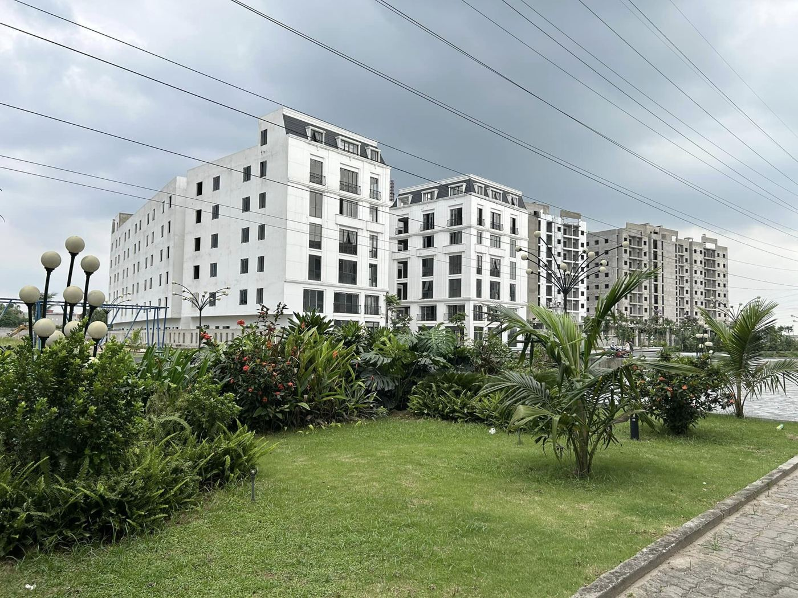
Nhà ở xã hội & chung cư cao tầng
Đây là "sân nhà" của chúng tôi. Bài toán của nhà ở xã hội là chi phí bị khống chế chặt nhưng tiêu chuẩn an toàn không được phép giảm. Chúng tôi giải bằng thiết kế biện pháp thi công tối ưu: điển hình hóa cốp pha, luân chuyển vật tư giữa các khối và tổ chức dây chuyền theo tầng.
Hệ thống phòng cháy chữa cháy
Chúng tôi làm trọn chuỗi: thiết kế, xin thẩm duyệt, thi công, nghiệm thu với Cảnh sát PCCC và bảo trì sau bàn giao. Kinh nghiệm cho thấy 80% lỗi nghiệm thu PCCC đến từ phối hợp kém giữa xây dựng và MEP – vì vậy chúng tôi đưa kỹ sư PCCC vào ban chỉ huy ngay từ phần thô.
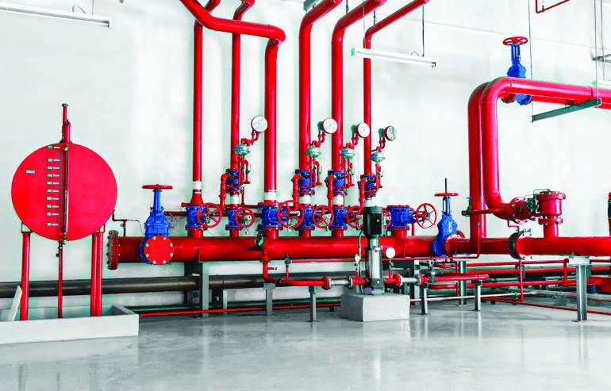
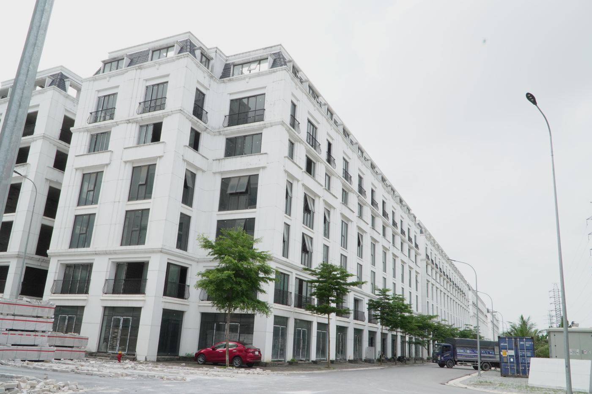
Nhà liền kề, shophouse & hạ tầng khu đô thị
Tại Cát Tường Smart City, chúng tôi thi công đồng thời hạ tầng kỹ thuật (san nền, đường, cấp thoát nước, điện chiếu sáng) và hàng trăm căn liền kề, shophouse – đảm bảo cư dân dọn về đã có đường, có điện, có cây xanh.
Bảo trì cơ điện & PCCC công trình đang vận hành
Bảo trì trong tòa nhà có người ở là một kỹ năng riêng: lên lịch theo khung giờ thấp điểm, thông báo cư dân, luôn giữ hệ thống dự phòng hoạt động và lập biên bản sau mỗi lần kiểm tra.
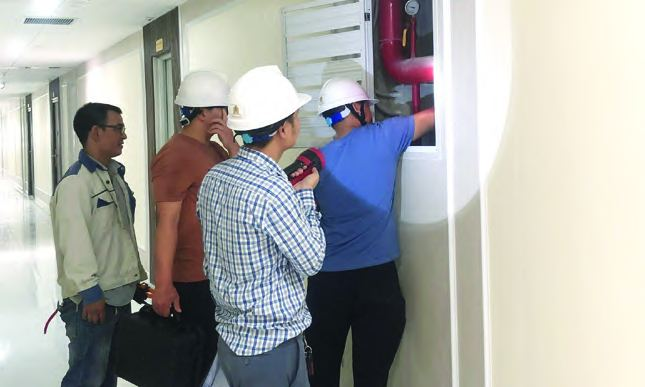
8 bước từ hồ sơ đến bàn giao
Nghiên cứu hồ sơ
Rà soát thiết kế, phát hiện xung đột kết cấu – MEP – PCCC trước khi thi công.
Lập biện pháp & tiến độ
Biện pháp thi công, tổng mặt bằng công trường, tiến độ tổng và tiến độ chi tiết.
Chuẩn bị công trường
Rào chắn, lán trại, điện nước thi công, đường công vụ, cẩu tháp, vận thăng.
Thi công phần ngầm
Cọc, tường vây, đào đất, móng, tầng hầm – quan trắc lún và chuyển vị liên tục.
Thi công phần thân
Dây chuyền cốp pha – cốt thép – bê tông theo tầng, chu kỳ 7–10 ngày/sàn.
MEP & PCCC
Lắp đặt đồng bộ cơ điện, cấp thoát nước, PCCC song song với hoàn thiện.
Hoàn thiện & nghiệm thu
Hoàn thiện căn hộ, nghiệm thu nội bộ 3 cấp, nghiệm thu PCCC với cơ quan chức năng.
Bàn giao & bảo hành
Bàn giao hồ sơ hoàn công, hướng dẫn vận hành, bảo hành và bảo trì dài hạn.
Những điều chúng tôi đã làm khác đi

Dựng mô hình 3D đường ống PCCC
Phát hiện va chạm với dầm, ống gió trước khi gia công – giảm sửa đổi tại công trường.
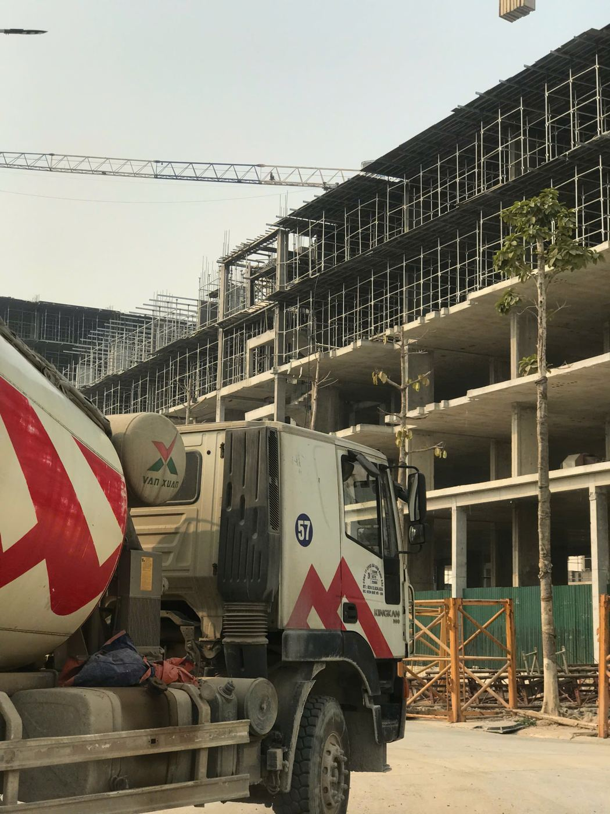
Bơm cần & điều phối xe bồn theo khung giờ
Đổ sàn liên tục không mạch ngừng, tránh giờ cao điểm giao thông khu công nghiệp.
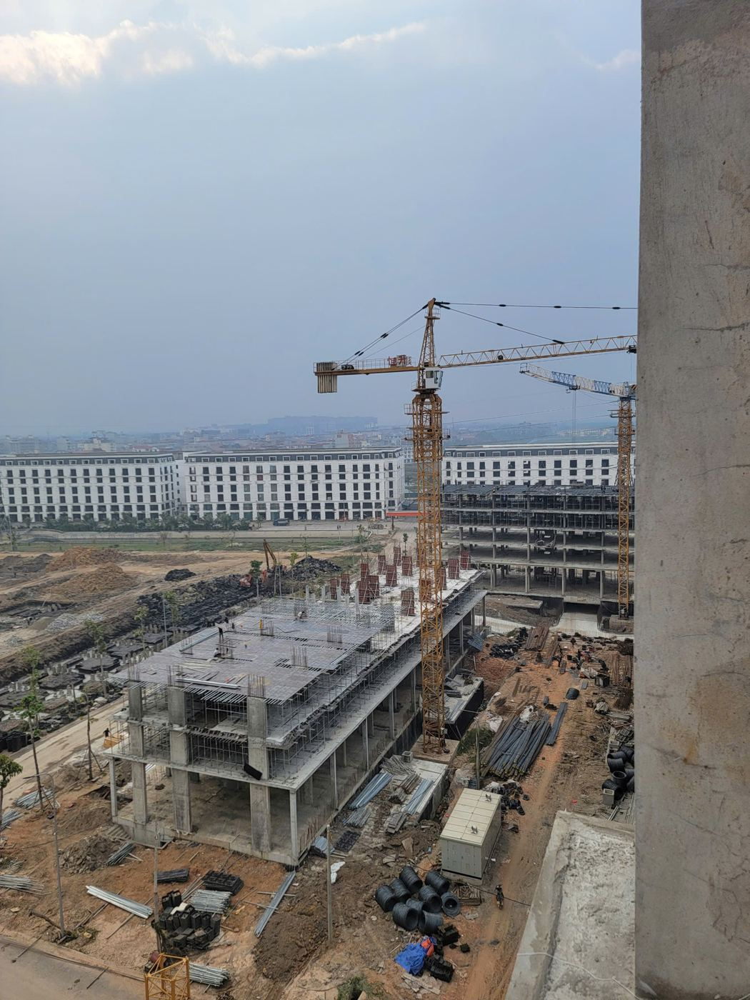
Thi công cuốn chiếu nhiều khối
Luân chuyển tổ đội, cốp pha giữa các khối nhà; vừa bàn giao khu này vừa thi công khu khác.
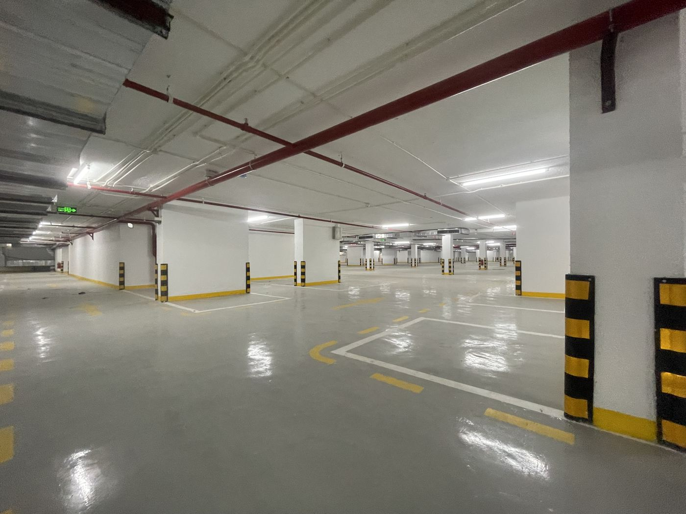
Sàn hầm epoxy & sprinkler hầm xe
Hoàn thiện tầng hầm đồng bộ: sơn epoxy, phân làn, chiếu sáng, chữa cháy tự động.
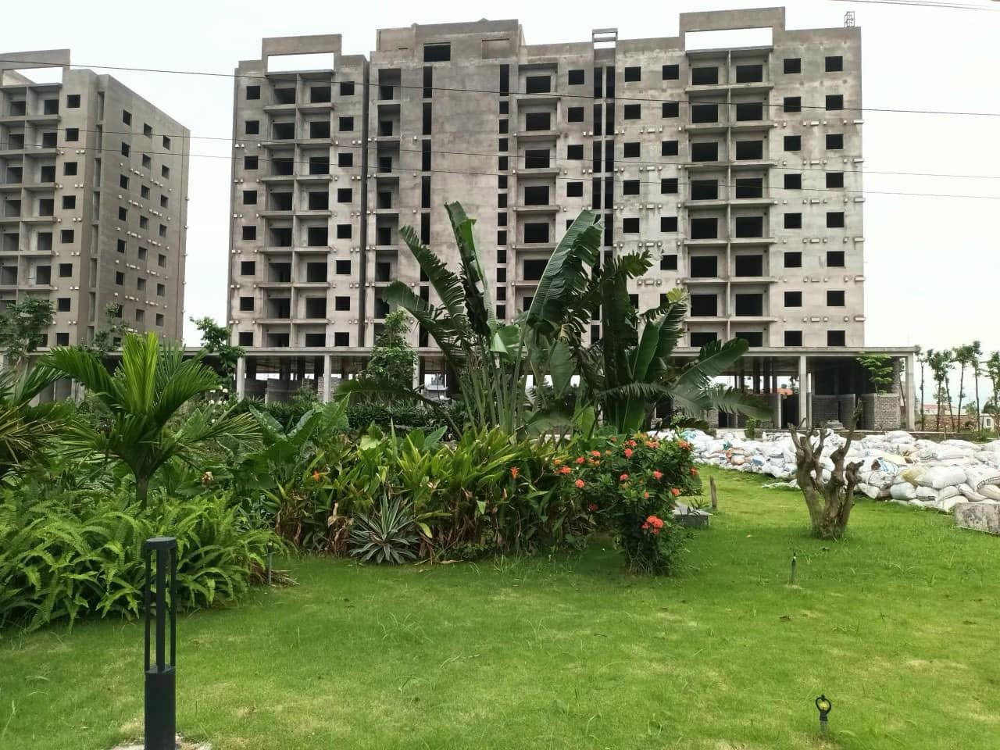
Thi công cảnh quan song song
Trồng cây, làm sân vườn ngay khi tháo giàn giáo – công trình "xanh" từ ngày bàn giao.
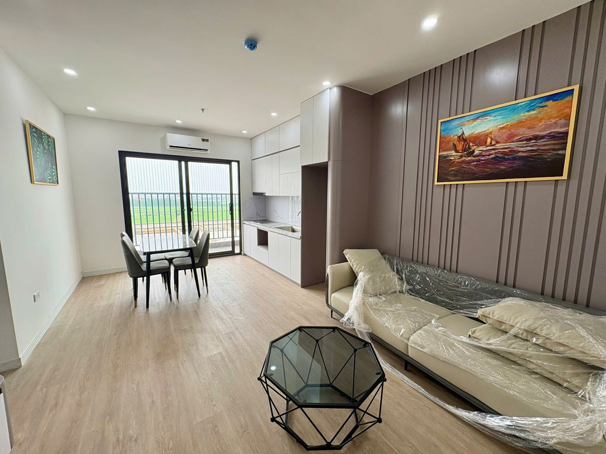
Căn hộ mẫu làm chuẩn nghiệm thu
Hoàn thiện một căn mẫu mỗi tòa để thống nhất tiêu chuẩn với chủ đầu tư trước khi làm đại trà.
Không có tiến độ nào đáng giá hơn một ca làm việc an toàn
Mỗi công nhân trước khi vào công trường đều được huấn luyện an toàn, cấp đủ mũ, giày, dây an toàn. Cán bộ ANVS – ATLĐ chuyên trách kiểm tra hằng ngày và có quyền dừng thi công khi phát hiện nguy cơ.
- Cấp 1 – Tổ độiTổ trưởng tự kiểm tra sau mỗi công việc
- Cấp 2 – Kỹ thuật hiện trườngCán bộ kỹ thuật nghiệm thu nội bộ, chụp ảnh lưu hồ sơ
- Cấp 3 – Phòng KH-KTKiểm tra xác suất, mời tư vấn giám sát nghiệm thu
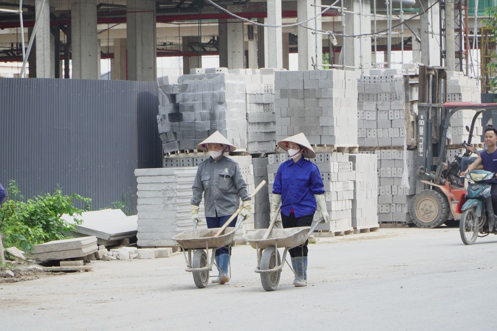
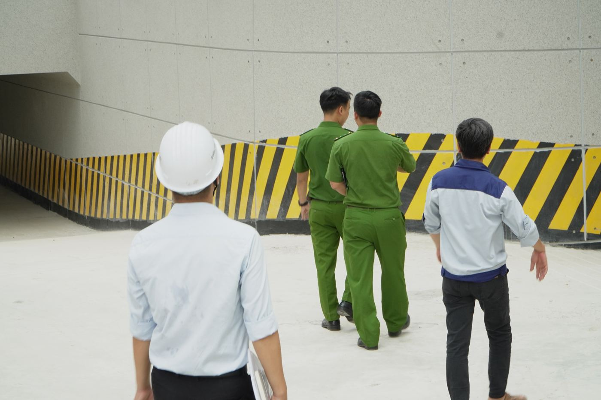
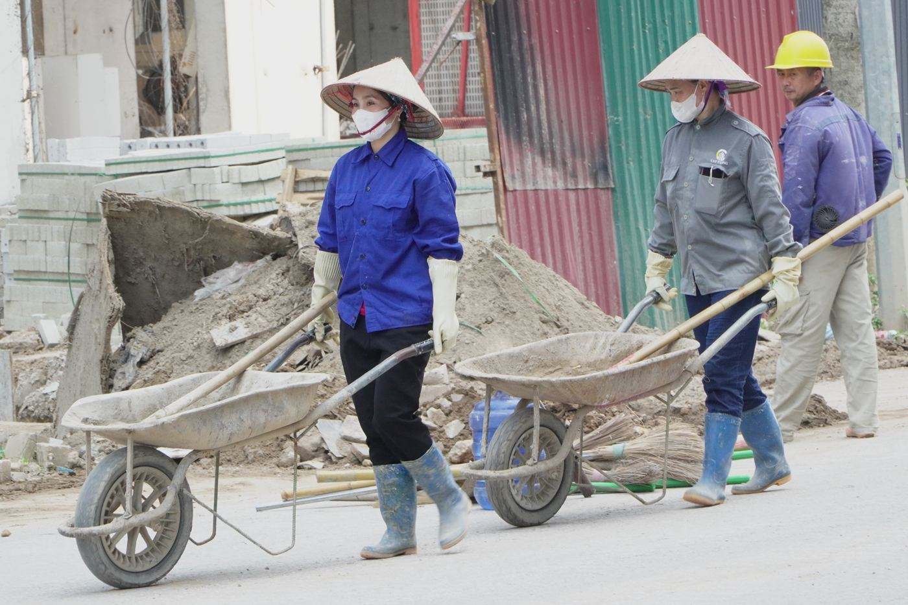
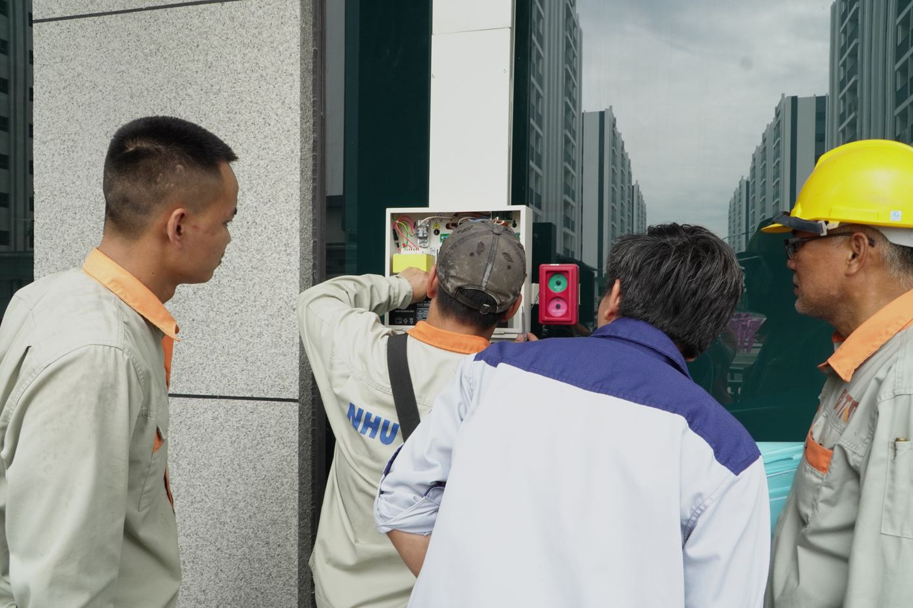
Công ty có nhận thi công cho chủ đầu tư ngoài Cát Tường Group không?
Có. Bên cạnh các dự án của Cát Tường Group, chúng tôi đã thi công cho Công ty CP TMĐTPT Thống Nhất và sẵn sàng tham gia đấu thầu các dự án nhà ở, công nghiệp, dân dụng khác tại Bắc Ninh và các tỉnh lân cận.
Có nhận riêng hạng mục PCCC không?
Có. Chúng tôi nhận trọn gói hoặc từng phần: tư vấn thiết kế, xin thẩm duyệt, thi công, nghiệm thu, bảo trì – cho cả công trình mới và công trình đang vận hành cần cải tạo.
Thời gian bảo hành và bảo trì như thế nào?
Bảo hành theo quy định pháp luật về xây dựng; hệ thống PCCC có gói bảo trì định kỳ theo quý hoặc năm, kèm biên bản kiểm tra gửi chủ đầu tư/ban quản trị.
Làm sao để nhận hồ sơ năng lực bản đầy đủ?
Gửi yêu cầu qua trang Liên hệ hoặc gọi 0963 813 680. Chúng tôi gửi bản đầy đủ (kèm chứng chỉ cá nhân, báo cáo tài chính) trong vòng 24 giờ làm việc.